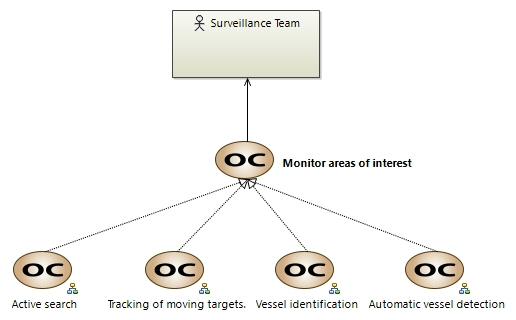

Monitor areas of interest
OperationalCapability
Drone project > Drone project > Operational Analysis > Operational Capabilities > Monitor areas of interest The client needs to monitor intelligence‑flagged zones continuously.The client needs to monitor areas of interest continuously. This means the client requires the ability to observe specific maritime and coastal zones flagged by intelligence as high‑risk. For example, if intelligence indicates that a particular coastline near Cádiz is frequently used for smuggling, the client must have a mechanism to ensure that these zones are monitored at all times, using data from satellite imagery, coastal radars, and AIS to dynamically adjust focus as new intelligence emerges.
Owned diagrams
COC Monitor areas of interest
